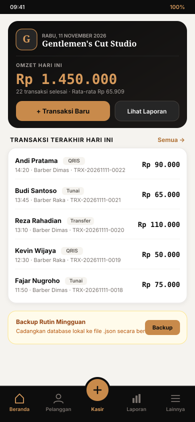
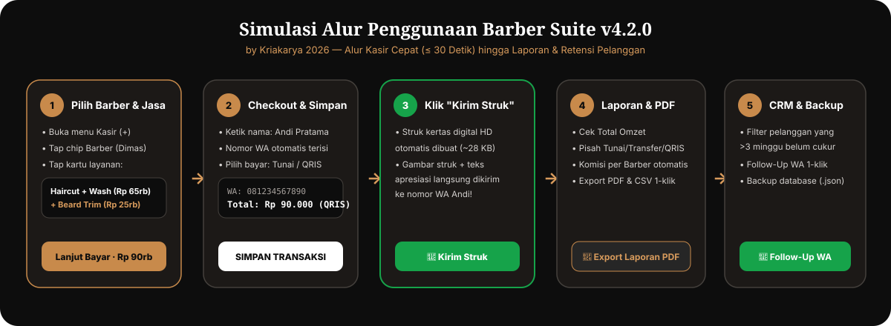

Barber Suite v4.2.0
by Kriakarya 2026 — Simulasi Penggunaan & Pratinjau SVG Seluruh Menu

Menu 2 dari 13
Beranda (Dashboard Harian)
Cara Penggunaan pada Layar Ini:
← Sebelumnya
Langkah Berikutnya →
▶ Putar Simulasi Otomatis
